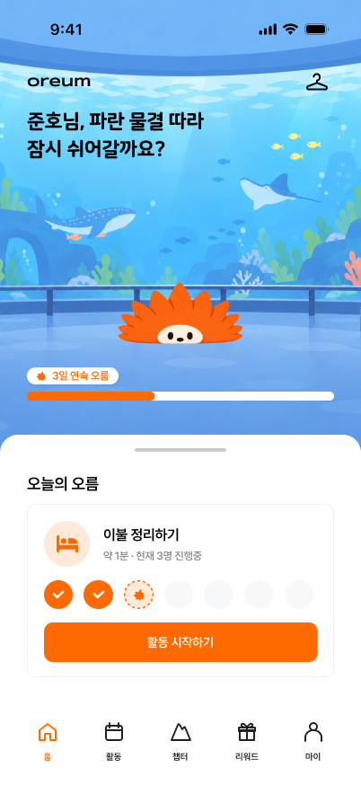
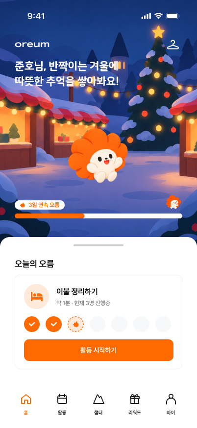
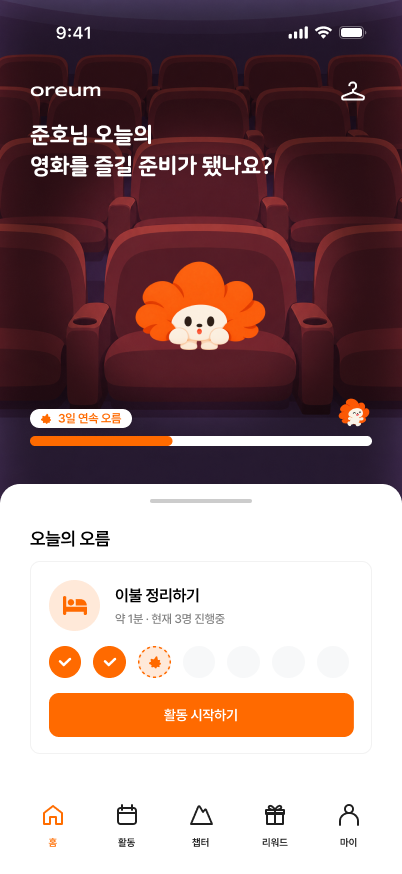
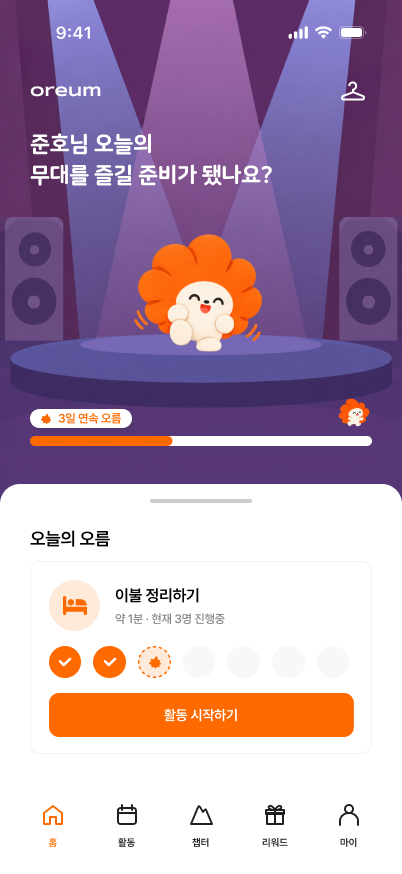
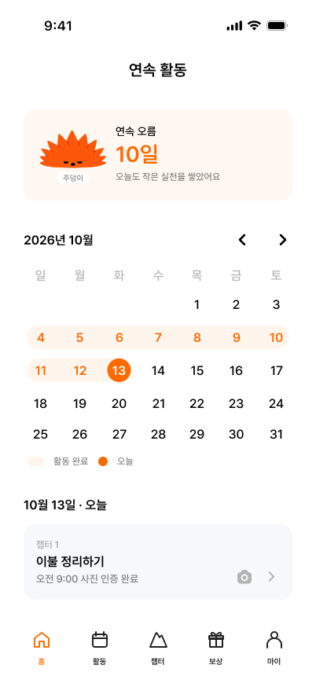

a 일상붕괴형
하루 평균 외출 0~1회, 주변 사람과 대화한 날 주 0~1일. 기상과 씻기 같은 일상부터 다시 세워요.
A유형 · 1단계 숨고르기부터oreum
4단계의 일상 생활 회복, 미션 수행, 단계별 아주 작은 미션 하나로 시작해
정부지원 프로그램의 문을 열기까지 오름이 함께합니다.






target
모두가 1단계부터 시작할 필요는 없어요. 최근 4주 동안의 외출과 대화를 기준으로 시작할 계단이 달라져요.
하루 평균 외출 0~1회, 주변 사람과 대화한 날 주 0~1일. 기상과 씻기 같은 일상부터 다시 세워요.
A유형 · 1단계 숨고르기부터
하루 평균 외출 3회 이하, 대화는 주 2일 이상 이어지는 분. 일상은 유지되니 1단계는 건너뛰고 집 밖에서 시작해요.
B유형 · 2단계 둘러보기부터하루 4회 이상 외출하거나, 지금 상태가 3개월이 안 됐거나, 일상·학업·일·관계에 어려움이 없다면 일반군으로 분류돼요. 오름은 고립·은둔 상태의 청년이 다시 문 밖으로 나오도록 돕는 서비스라 일반군은 서비스 대상이 아니에요. 일자리나 교육 지원이 필요하다면 고용24, 지역 청년센터의 청년 지원 프로그램을 바로 이용해 보세요.
앱의 첫 진단과 같은 질문이에요. 답변은 저장되지 않아요.
큰 계단 하나가 한 단계예요. 미션을 하나 마칠 때마다 얇은 층이 하나씩 쌓여, 다음 계단까지 이어져요.
1단계
일상의 리듬을 되찾아요
2단계
집 밖으로 한 걸음 나가요
 3단계
3단계
사람과 짧게 마주해요
 4단계
4단계
지원 프로그램과 연결돼요
하루에 미션 하나. 끝내면 사진이나 위치로 인증하고, 리워드와 연속 기록이 쌓여요.



의지에 기대지 않아요. 멈춰도 다시 이어갈 수 있는 장치가 함께 있어요.
미션당 1,000원, 컨디션 좋은 날의 보너스 미션, 지원 프로그램 참여를 마치면 누적 리워드 ×2.
이어갈수록 오르미가 웅크림에서 빼꼼, 살며시, 활짝으로 자라요.
하루 쉬어도 쌓은 층은 그대로. 부활 미션과 복습으로 다시 한 층 쌓아요.
오름은 지원 프로그램을 대신하지 않아요. 그 문 앞까지 함께 가요.
촬영된 사진은 인증 후 바로 삭제됩니다. 타인이 볼 수도, 서비스에 저장되지도 않아요.
리워드는 현금으로 지급됩니다. 계좌 설정 시 리워드를 현금으로 받을 수 있어요.
쌓은 층은 그대로 유지되며 처음으로 돌아가지 않아요.
부활 미션으로 기록을 복구하여 연속 활동을 이어갈 수 있어요.